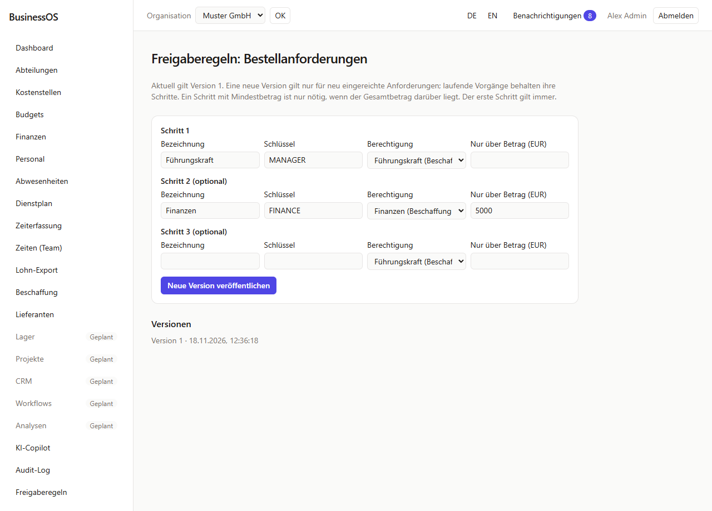
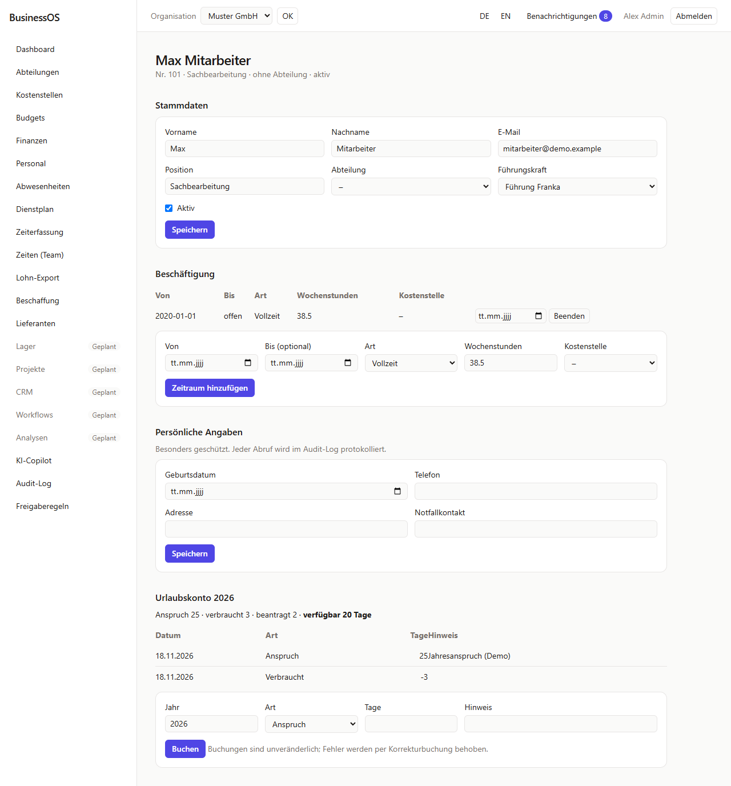
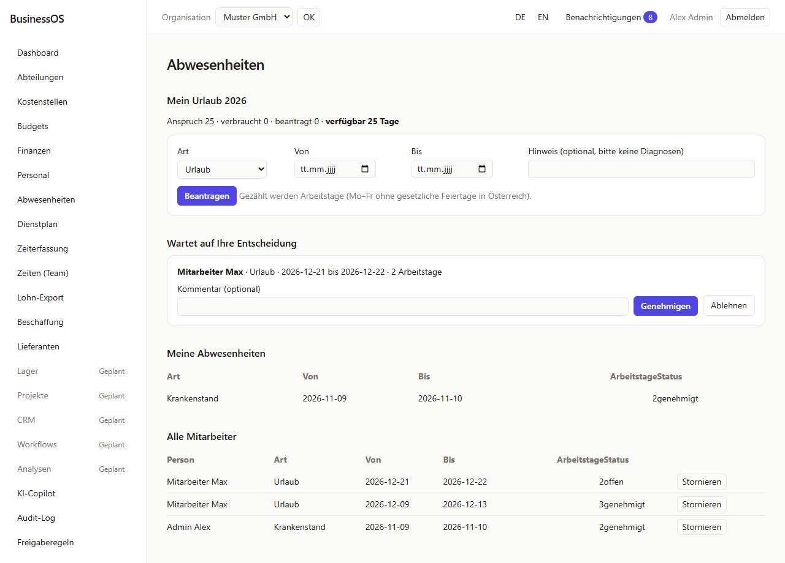
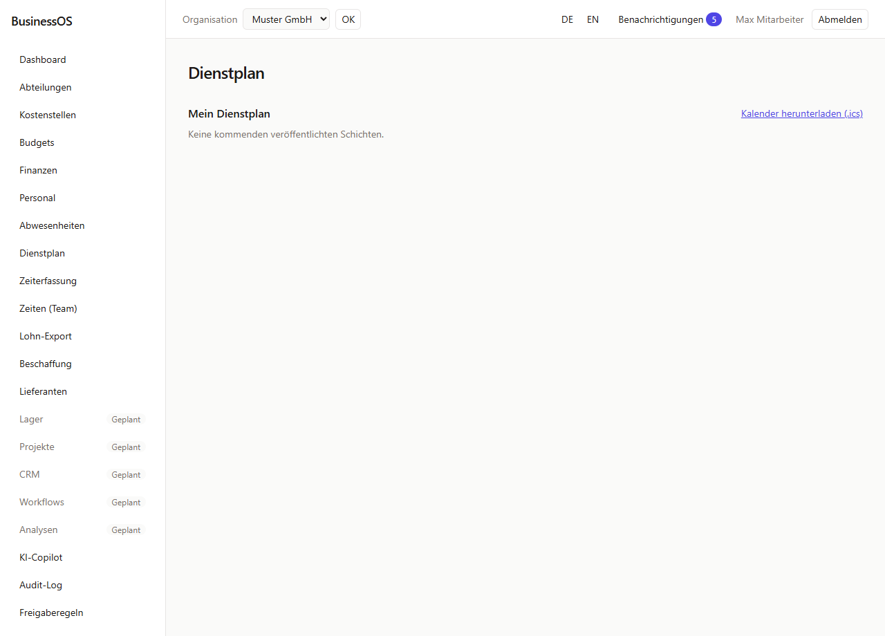
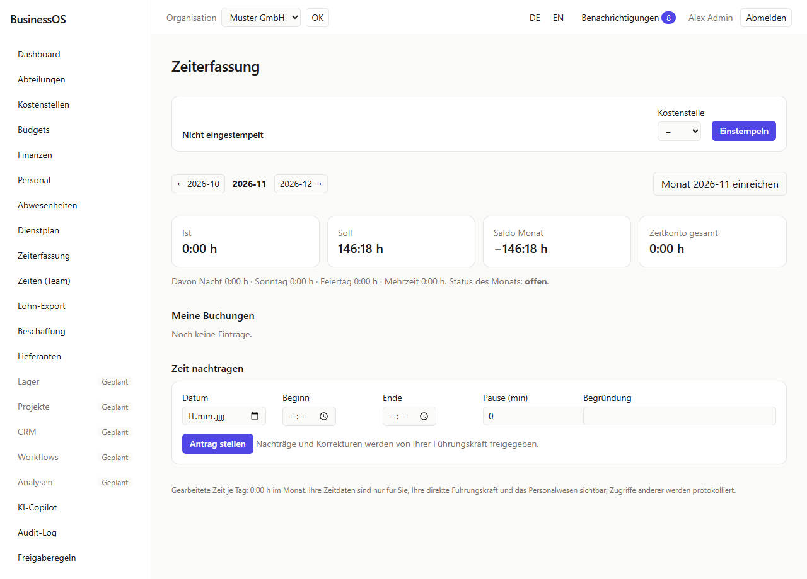
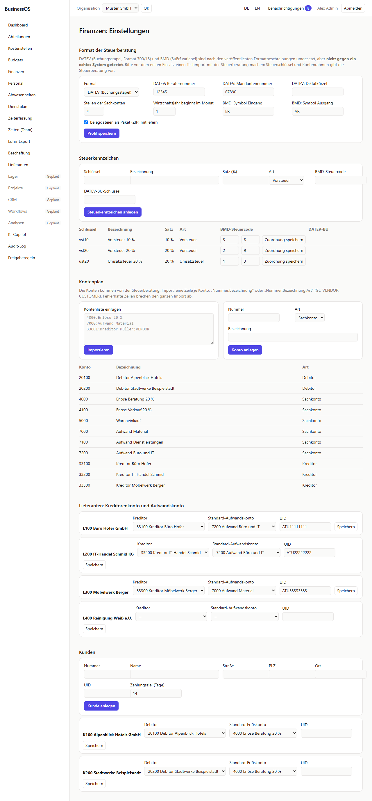
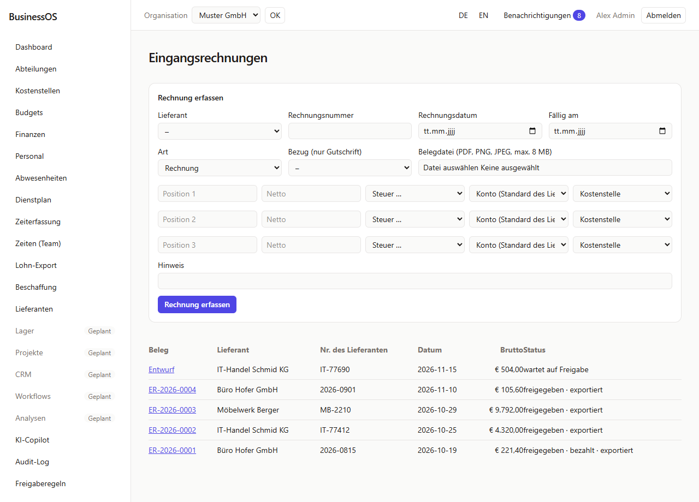
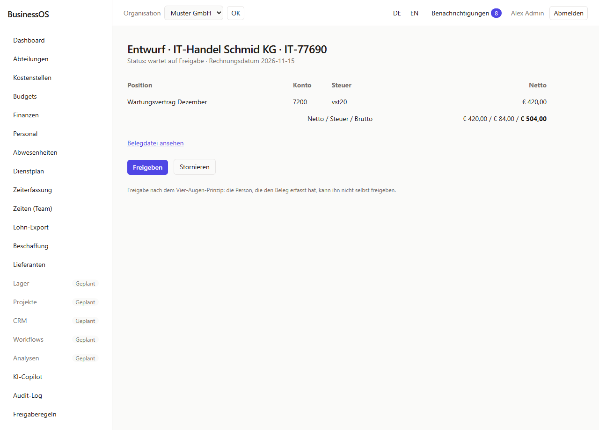
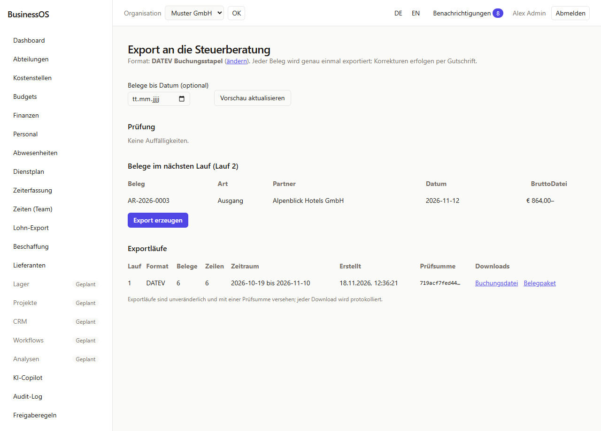
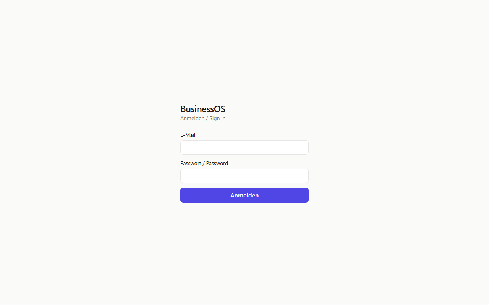

Ihr Unternehmen. Ein System.
BusinessOS verbindet Einkauf, Personal, Dienstplan, Zeiterfassung, Lohn-Export und Finanzen – mit klaren Rechten, lückenloser Nachvollziehbarkeit und einem KI-Assistenten, der nur liest.

Alles, was der Alltag braucht
Ein gemeinsamer Datenbestand statt vieler Insellösungen: Was in einem Modul entsteht, steht den anderen sofort zur Verfügung.
Mehrere Firmen, klare Rechte
Mandantentrennung und Rollen – serverseitig geprüft.
Beschaffung & Budget
Freigaben, Bestellungen, Budgetbindung.
Personal
Akte, Urlaub, Abwesenheiten.
Dienstplanung
Regelprüfung, Versionen, Tausch.
Zeiterfassung
Stempeluhr, Monatsabschluss, Zeitkonto.
Lohn-Export
Mengen für die Lohnverrechnung.
Finanzen
Belege und Export an die Steuerberatung.
KI-Copilot
Fragen an Ihre Daten – nur lesend.
Audit-Log
Jede Änderung nachvollziehbar.
Vom Bedarf zur Bestellung – mit Freigabe, die mitdenkt
Anforderungen werden erfasst, über konfigurierbare Stufen freigegeben und als Bestellung gegen das Budget gebucht.
- Mehrstufige Freigabe, z. B. ab 5.000 € zusätzlich Finanzen
- Regeln versioniert – laufende Vorgänge bleiben stabil
- Bestellung, Budgetbindung und Protokoll in einem Schritt
Alle Funktionen im Detail
Ablauf
- Anfordern: Mitarbeiter erfassen Titel, optional eine Kostenstelle und bis zu fünf Positionen (Beschreibung, Menge, Stückpreis). Die Nummer (PR-JJJJ-NNNN) wird fortlaufend vergeben.
- Freigeben: Die Führungskraft entscheidet; ab einem Gesamtbetrag über 5.000 € ist zusätzlich die Freigabe durch Finanzen nötig. Ablehnen ist mit Kommentar möglich. Wer freigeben darf, bestimmt die Berechtigung des Schritts, nicht der Name.
- Bestellen: Freigegebene Anforderungen werden einem Lieferanten und einer Kostenstelle zugeordnet und zur Bestellung. Dabei werden in einer einzigen Transaktion Bestellung, Budgetbindung, Audit-Eintrag und Ereignis geschrieben.
Freigaberegeln
- Die Schritte (Bezeichnung, erforderliche Berechtigung, optionaler Mindestbetrag) sind als versionierte Richtlinie konfigurierbar – keine festen Schwellen im Code.
- Eine neue Version gilt nur für neu eingereichte Anforderungen; laufende Vorgänge behalten ihre Schritte und deren damals gültige Berechtigung.
- Wer eine Anforderung gestellt hat, kann sie nicht selbst freigeben.




Immer wissen, was noch verfügbar ist
Budget je Kostenstelle und Jahr. Der gebundene Betrag wird aus den Bestellungen berechnet – nicht von Hand gepflegt.
- Gebunden und verfügbar live aus den Bestellungen
- Überschreitungen sofort sichtbar
- Exakte Geldrechnung, keine Rundungsfehler
Alle Funktionen im Detail
So funktioniert es
- Berechtigte (Finanzen, Inhaber) setzen den Budgetbetrag je Kostenstelle und Jahr.
- Die Tabelle zeigt Budget, Gebunden (Summe der Bestellungen der Kostenstelle im Jahr) und Verfügbar. Überschreitungen werden markiert und erscheinen als Kennzahl auf dem Dashboard.
- Geldbeträge werden überall als Dezimalzahl mit exakter Arithmetik geführt, nie als Gleitkommazahl.

Grenzen: Eine Verknüpfung von Eingangsrechnungen mit dem Budget (Ist statt nur Bestellbindung) ist noch nicht umgesetzt.
Die Personalakte, die Datenschutz ernst nimmt
Stammdaten, Beschäftigung, Urlaubskonto und Abwesenheiten – sensible Angaben getrennt und jeder Abruf protokolliert.
- Urlaubskonto als nachvollziehbares Journal
- Abwesenheiten mit Freigabe, ohne Diagnosen
- Arbeitstage nach österreichischem Feiertagskalender
Alle Funktionen im Detail
Mitarbeiter
- Stammdaten (Nummer, Name, Position, Abteilung, Führungskraft, Verknüpfung mit dem Benutzerkonto) und Beschäftigungszeiträume mit Vertragsart und Wochenstunden – ohne Überschneidungen.
- Persönliche Angaben (Geburtsdatum, Adresse, Telefon, Notfallkontakt) sind besonders geschützt: Jeder Abruf wird im Audit-Log festgehalten.
Urlaub und Abwesenheiten
- Das Urlaubskonto ist ein Journal: Anspruch, Übertrag und Korrekturbuchungen werden hinzugefügt, nie überschrieben. Angezeigt werden Anspruch, verbraucht, beantragt und verfügbar.
- Abwesenheitsarten: Urlaub, Krankenstand, Pflegefreistellung, Sonderurlaub. Gezählt werden Arbeitstage ohne Wochenenden und österreichische Feiertage. Das Hinweisfeld ist ausdrücklich ohne Diagnosen.
- Urlaub und Pflegefreistellung gehen zur Freigabe an die Führungskraft; ein Antrag, der mehr Tage braucht als verfügbar, wird abgelehnt. Entscheidungen und Stornos laufen als Ereignisse, Betroffene werden benachrichtigt.



Grenzen: Es gibt noch kein DSGVO-Löschkonzept (Anonymisierung, Aufbewahrungsfristen) – vor dem Produktivbetrieb nötig.
Dienstpläne, die sich selbst prüfen
Schichten planen, Besetzung im Blick behalten und Regelverstöße erkennen, bevor der Plan veröffentlicht wird.
- Prüfung auf Ruhezeit, Höchstarbeitszeit und Pausen
- Veröffentlichung in unveränderlichen Versionen
- Schichttausch und Kalenderexport (.ics)
Alle Funktionen im Detail
Planen
- Einrichten: Standorte mit Zeitzone, Qualifikationen (z. B. Kasse), Schichtvorlagen (Frühdienst/Spätdienst) und die Arbeitszeitregeln (Voreinstellung nach österreichischem Arbeitszeitgesetz, anpassbar für Kollektivvertrag oder Betriebsvereinbarung).
- Einen Plan für einen Zeitraum anlegen, Schichten hinzufügen (Datum, Zeiten, Pause, benötigte Personen, Qualifikation, Bezeichnung) und Personen zuweisen.
- Die Regelprüfung läuft laufend und zeigt Regelverstöße (z. B. Ruhezeit, Höchstarbeitszeit pro Tag/Woche, fehlende Pause, Überschneidungen) und Hinweise (z. B. Unterbesetzung). Abwesenheiten und fehlende Qualifikationen werden berücksichtigt.
Veröffentlichen und tauschen
- Beim Veröffentlichen entsteht eine unveränderliche Version; Änderungen erzeugen eine neue Version mit Änderungshinweis. Mitarbeiter sehen nur die veröffentlichte Fassung, nie die Arbeitskopie.
- Mitarbeiter können einen Schichttausch mit einer Kollegin oder einem Kollegen anfragen; nach deren Zustimmung entscheidet die Führungskraft. Die Regeln werden auch beim Tausch geprüft.
- Der persönliche Plan lässt sich als Kalenderdatei (.ics) herunterladen. Zeiten werden als UTC gespeichert und je Standort in der lokalen Zeit angezeigt – auch über Sommerzeitwechsel.



Grenzen: Die Regeln sind Konfiguration, keine Rechtsberatung: Ob Ihr Kollektivvertrag abweicht, müssen Sie selbst festlegen.
Stempeln, korrigieren, abschließen – nachvollziehbar
Von der Stempeluhr bis zum freigegebenen Monat: Buchungen werden nie überschrieben, Korrekturen laufen über Gegenbuchungen.
- Ein- und Ausstempeln mit Pausen und Kostenstelle
- Monatsabschluss mit Freigabe durch die Führungskraft
- Zeitkonto, Soll/Ist und Zuschläge auf einen Blick
Alle Funktionen im Detail
Erfassen
- Ein- und Ausstempeln (optional mit Kostenstelle), Pausen starten und beenden. Buchungen in der Zukunft sind nicht möglich.
- Nachtragen und Korrigieren geschieht per Antrag mit Begründung; die Führungskraft gibt frei. Bestehende Buchungen werden nie verändert – eine Korrektur ist eine Gegenbuchung plus neue Buchung.
Monat und Konto
- Die Monatsübersicht zeigt Ist, Soll (aus Beschäftigung, Feiertagen und Abwesenheiten berechnet), Monatssaldo und Zeitkonto sowie die Anteile Nacht, Sonntag, Feiertag und Mehrzeit; die Prozentsätze sind konfigurierbar.
- Zum Monatsende reicht der Mitarbeiter den Monat ein; die Führungskraft gibt ihn frei oder gibt ihn mit Begründung zurück. Freigegebene Monate sind gesperrt; Personal kann sie mit Begründung wieder öffnen. Eigene Zeiten kann niemand selbst freigeben.
- Das Zeitkonto ist ein Journal; Anpassungen sind Buchungen mit Begründung.
- Zeitdaten sind nur für die Person selbst, die direkte Führungskraft und das Personalwesen sichtbar; jeder Zugriff anderer wird protokolliert.



Grenzen: Auszahlungen von Zeitguthaben (Überstunden auszahlen) sind noch nicht abgebildet.
Saubere Mengen für die Lohnverrechnung
Erfasste Zeiten und Abwesenheiten freigegebener Monate als CSV – mit Prüfung vorab und Nachträgen bei späteren Änderungen.
- Eigene Lohnart-Zuordnung und Dateiprofil
- Unveränderliche Läufe mit Prüfsumme
- Nachtrag mit Differenzen statt Überschreiben
Alle Funktionen im Detail
Ablauf
- Im Profil legen Sie fest, wie die Datei aussieht: Trennzeichen, Dezimalzeichen, Zeichensatz, Stunden oder Minuten, Kopfzeile – und die Lohnart-Zuordnung (z. B. Normalarbeitszeit → 1000). Ohne Zuordnung wird nichts exportiert.
- Die Prüfung zeigt vor dem Export, was fehlt: nicht freigegebene Monate, fehlende Lohnarten, Beschäftigte ohne Zeit und ohne Abwesenheit, Plan/Ist-Lücken. Unvollständiges wird nur nach ausdrücklicher Bestätigung exportiert.
- Der Lauf erzeugt zeilenbasierte CSV je Person und Lohnart (Menge und Zuschlagsprozent). Läufe sind unveränderlich und tragen eine Prüfsumme (SHA-256), die beim Download geprüft wird.
- Ändert sich etwas nach dem Export, enthält der nächste Lauf einen Nachtrag mit den Differenzen (auch negativ). Im Screenshot sieht man einen solchen Nachtrag, weil ein Monat erst nach dem ersten Lauf freigegeben wurde.

Grenzen: Kein vorgefertigtes Format für BMD, RZL oder DATEV Lohn: Die Datei muss im Importassistenten der Lohnverrechnung zugeordnet werden. Keine direkte Schnittstelle, nur Download als Datei.
Belege erfassen, Steuerberatung entlasten
Eingangs- und Ausgangsrechnungen mit Beleg, Vier-Augen-Freigabe und Export als BMD- oder DATEV-Buchungsstapel samt Belegpaket.
- Beleg-Upload mit Inhaltsprüfung und Dublettenprüfung
- Lückenlose Rechnungsnummern, Gutschriften statt Änderungen
- Jeder Beleg wird genau einmal exportiert
Alle Funktionen im Detail
Einrichten
- Kontenplan importieren oder anlegen (Sachkonten, Kreditoren, Debitoren), Steuerkennzeichen mit Satz und Zuordnung auf BMD-Steuercode bzw. DATEV-BU-Schlüssel, Konten und UID je Lieferant und Kunde.
- Im Buchhaltungsprofil: Format, Berater- und Mandantennummer (DATEV), Kontenlänge, Beginn des Wirtschaftsjahres, Buchungssymbole, Belegpaket ja/nein. Die Vorgaben dafür macht die Steuerberatung.
Eingangsrechnungen
- Rechnung mit Positionen (Netto, Steuerkennzeichen, Konto, Kostenstelle) und Belegdatei erfassen. Uploads (PDF, PNG, JPEG, höchstens 8 MB) werden am Inhalt geprüft, nicht an der Endung, und mit Prüfsumme gespeichert.
- Dublettenprüfung je Lieferant und Rechnungsnummer. Die Steuer wird je Steuersatz auf die Summe gerechnet und die Rundungsdifferenz fair auf die Positionen verteilt.
- Vier-Augen-Freigabe: Wer erfasst, gibt nicht frei. Mit der Freigabe entsteht die fortlaufende Belegnummer ER-JJJJ-NNNN. Danach: als bezahlt markieren, vor dem Export stornieren, Gutschriften erfassen.
Ausgangsrechnungen
- Entwurf mit Positionen, dann Ausstellen: Die Nummer (AR-JJJJ-NNNN) wird lückenlos vergeben, ausgestellte Rechnungen sind unveränderlich. Korrekturen laufen als Gutschrift (Entwurf aus der Rechnung); Zahlungseingänge werden vermerkt.
Export
- Die Vorschau listet alle Belege des nächsten Laufs und prüft vorab: fehlende Konten, fehlender BMD-Code oder DATEV-Schlüssel, Kontenlängen, mehrere Wirtschaftsjahre u. a. Fehler blockieren den Lauf, Hinweise müssen bestätigt werden.
- Der Lauf erzeugt die Buchungsdatei (DATEV: EXTF-Kopfzeile und 125 Spalten, Windows-1252; BMD: Semikolon-CSV) und optional ein Belegpaket als ZIP. Jeder Beleg wird genau einmal exportiert; Läufe sind unveränderlich, mit Prüfsumme, und jeder Download steht im Audit-Log.







Grenzen: Beide Formate sind nach den veröffentlichten Beschreibungen gebaut, aber nicht gegen ein echtes BMD- oder DATEV-System getestet. Vor dem Einsatz bitte mit der Steuerberatung einen Testimport machen. Noch nicht vorhanden: PDF der ausgestellten Rechnung, Fremdwährung, Bankanbindung, Umsatzsteuer-Voranmeldung.
Die Basis, auf der alles aufbaut
Rechte, Stammdaten, Benachrichtigungen, Audit-Log und der KI-Copilot – hier im Detail.
Anmeldung, Organisationen und Rollen
Alle Funktionen im Detail
Was Sie tun können
- Mit E-Mail und Passwort anmelden; nach fünf Fehlversuchen wird das Konto 15 Minuten gesperrt (gezählt werden nur fehlgeschlagene Anmeldungen).
- Die Organisation wechseln und die Oberfläche zwischen Deutsch und Englisch umschalten (DE/EN oben rechts).
- Auf dem Dashboard sehen: Zahl der Abteilungen, Kostenstellen und Mitglieder, offene Anforderungen, Freigaben, die auf Sie warten, gebundenes Budget und Kostenstellen über Budget – dazu die letzten Aktivitäten aus dem Audit-Log. Alle Werte stammen live aus der Datenbank.
Rollen und Rechte
- Mitgliedschaften tragen eine Rolle: Inhaber (alles), Finanzen, Führungskraft, Personal, Dienstplaner und Mitarbeiter. Jede Rolle besteht aus fein abgestuften Berechtigungen (z. B. „Beschaffung freigeben“, „Zeiten korrigieren“, „Lohn-Export erzeugen“).
- Die Berechtigung wird serverseitig am Anfang jeder Funktion geprüft, nicht nur durch ausgeblendete Menüs. Eine automatische Matrix testet für jede Rolle, was erlaubt und was verboten ist.
- Die Navigation zeigt alle Module; Module, die es noch nicht gibt, stehen als „Geplant“ in der Liste.

Grenzen: Passwort-Zurücksetzen per E-Mail und Mehrfaktor-Anmeldung (MFA) gibt es noch nicht.
Abteilungen, Kostenstellen und Lieferanten
Alle Funktionen im Detail
Abteilungen und Kostenstellen
- Abteilungen können verschachtelt sein (übergeordnete Abteilung). Kostenstellen gehören optional zu einer Abteilung und tragen einen kurzen Code (z. B. 2000 Vertrieb).
- Codes sind je Organisation eindeutig; ungültige Zeichen werden an der Eingabegrenze abgelehnt.
Lieferanten
- Lieferanten mit Nummer, Name und E-Mail. Sie werden in der Beschaffung (Bestellung) und im Finanzmodul (Eingangsrechnungen, Kreditorenkonto, UID) verwendet.


Benachrichtigungen, Audit-Log und KI-Copilot
Alle Funktionen im Detail
Benachrichtigungen
- Freigaben, Entscheidungen, Monatsabschlüsse und Planänderungen erzeugen Benachrichtigungen. Sie entstehen über einen Transaktions-Outbox: Ereignis und Änderung werden gemeinsam gespeichert und danach zuverlässig, idempotent und mit Wiederholung abgearbeitet (auch über einen eigenen Worker-Prozess).
Audit-Log
- Jede schreibende Operation protokolliert Wer, Wann, Was und Details in derselben Transaktion. Die Liste ist nur lesbar. Auch Lesezugriffe auf sensible Daten, Downloads und jede KI-Aktion stehen dort.
KI-Copilot
- Beantwortet Fragen zu den Daten der aktiven Organisation – nur lesend und nur mit den Berechtigungen der fragenden Person, über feste Werkzeuge (kein freies SQL). Jede Frage und jeder Datenzugriff wird protokolliert.
- Der Copilot benötigt einen
ANTHROPIC_API_KEYauf dem Server; ohne Schlüssel zeigt die Seite den Hinweis wie im Screenshot. Er kennt derzeit Beschaffung, Budgets, Lieferanten, Kostenstellen und Abteilungen.
Geplante Module
- Lager, Projekte, CRM, Workflows und Analysen sind in der Navigation sichtbar, aber klar als geplant gekennzeichnet; sie täuschen keine Funktion vor.

Grenzen: Der Copilot wurde nur mit einem Testanbieter geprüft, nicht gegen die Live-API.
Rollenansichten
Alle Funktionen im Detail
Beispiele
- Mitarbeiter stempeln, beantragen Urlaub und Beschaffung, sehen ihren Plan und ihre Zeiten – und nichts von anderen.
- Führungskräfte entscheiden über Anträge ihres Teams (Urlaub, Zeiten, Beschaffung, Tausch) und sehen deren Monatsabschlüsse.
- Finanzen pflegen Budgets und Finanzdaten, geben Eingangsrechnungen frei und erzeugen Exporte.


Gebaut für Vertrauen
Unternehmensdaten verlangen Sorgfalt. Diese Prinzipien gelten für jedes Modul.
Mandantentrennung
Jede Abfrage ist auf die Organisation begrenzt – automatisch getestet, auch gegen fremde Mandanten.
Lückenloses Audit
Änderungen werden in derselben Transaktion protokolliert – auch Downloads und KI-Zugriffe.
Unveränderliche Daten
Buchungen, Exporte und veröffentlichte Pläne werden nie überschrieben, sondern korrigiert.
KI mit Leitplanken
Der Copilot liest nur, mit Ihren Rechten und über feste Werkzeuge – nie mit freiem SQL.
Mitarbeiter
stempeln, beantragen Urlaub und Beschaffung, sehen ihren Dienstplan – und nur ihre eigenen Daten.
Führungskräfte
entscheiden über Anträge ihres Teams und schließen Monate ab.
Finanzen & Personal
pflegen Budgets, geben Rechnungen frei und erzeugen Exporte für Lohn und Steuerberatung.
Ehrlich: Stand der Dinge
BusinessOS ist eine Alpha-Version. Wir sagen lieber, was noch fehlt, als etwas vorzutäuschen:
- Die Exportformate BMD und DATEV sind nach den veröffentlichten Beschreibungen gebaut, aber noch nicht gegen echte Systeme getestet – bitte vor dem Einsatz mit der Steuerberatung einen Testimport machen.
- Der Lohn-Export liefert Mengen, keine Lohnberechnung; ein fertiges Format für Lohnverrechnungsprogramme gibt es noch nicht.
- Der KI-Copilot ist nur mit einem Testanbieter geprüft und benötigt einen API-Schlüssel.
- Noch geplant: Lager, Projekte, CRM, Workflows, Analysen, REST-API, Mehrfaktor-Anmeldung, DSGVO-Löschkonzept.
- Alle Bilder zeigen erfundene Demo-Daten.